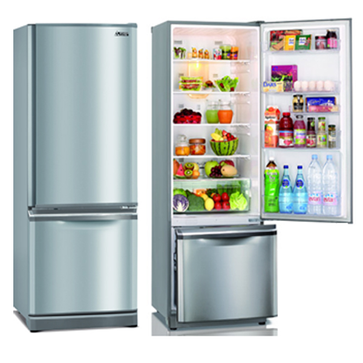

Tủ lạnh
ĐẶC ĐIỂM SẢN PHẨM
Tổng dung tích (thực)305 lít
Số người sử dụng thích hợp6 - 7 người (250 - 350 lít)
Dung tích ngăn đá (L)72 lít
Dung tích ngăn lạnh (L)223 lít
Kiểu tủ lạnhNgăn đá trên
Chất liệu bên ngoài Tủ lạnhSơn tĩnh điện
Chất liệu khay Tủ lạnhKhay kính
CÔNG NGHỆ
Tủ lạnh Inverter - tiết kiệm điệnCó
Công nghệ làm lạnh trên Tủ lạnhKép tăng cường(Twin Cooling System Plus), Gián tiếp, Hệ thống 2 dàn lạnh độc lập
Công nghệ khử mùi, kháng khuẩnNano Ag+, Hybrid Bio , Double Deodorizer
Tính năngChống đóng tuyết
Tiện íchLàm đá tự động, Làm đá nhanh, Đèn LED, Bảng điều khiển bên ngoài, Công nghệ giữ lạnh Mr.Coolpack, 5 chế độ chuyển đổi theo nhu cầu